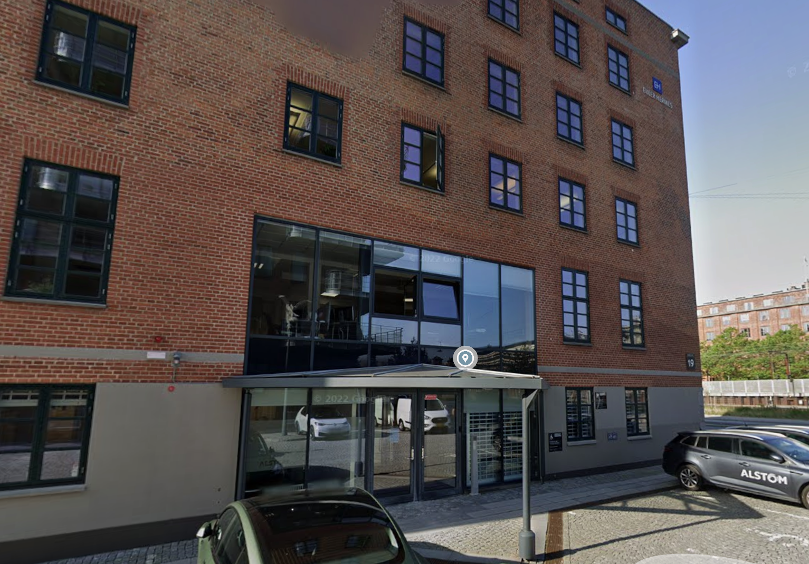

Mandag morgen tog jeg toget in til Østerport station og gik mod Amerika Pl. 19, og skulle møde kl 9. 
Som noget af det første blev jeg introduceret til en hjemmeside der heder internetingishard, som er en god måde at lærer noget om HTML og CSS (Det er på en hjemmesiden). På den lærte jeg at skrive text på forskellige måder.
Jeg lærte også en måde man kan lave links og sette billeder ind på en hjemmeside.